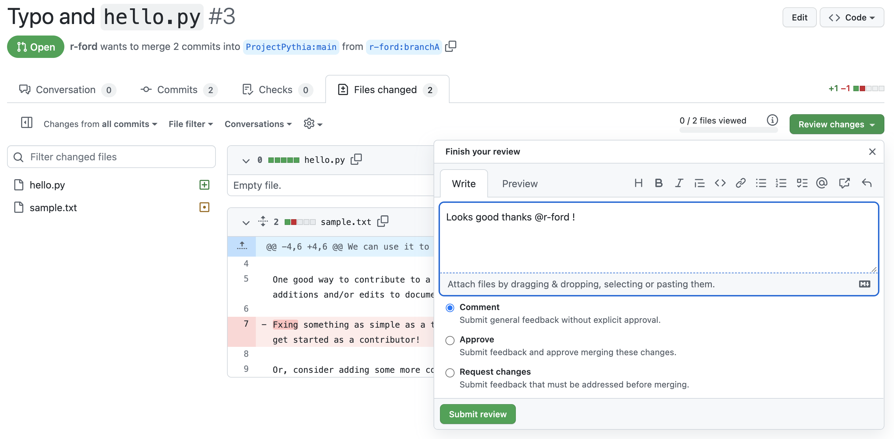

Reviewing Pull Requests
Pull Requests (PRs) are typically reviewed by collaborators before being merged in to the main project branch. Many people feel overwhelmed, or feel as though their skills are lacking, when asked to perform their first PR review. If you find yourself in this or a similar situation, the examples in this tutorial can be quite helpful. With the help of this tutorial, anyone can quickly learn the basics of reviewing PRs, which can boost collaboration and productivity in any project hosted on GitHub. This tutorial also contains useful tips on how to effectively review a PR in many different situations.
Overview:
This tutorial covers the following topics:
What is a Pull Request Review?
Requesting Pull Request Reviews
Ways to View a Pull Request
Providing a Pull Request Review
What to Look for When Reviewing
Prerequisites
Concepts |
Importance |
Notes |
|---|---|---|
Necessary |
||
Necessary |
||
Necessary |
||
Necessary |
||
Recommended |
||
Necessary |
||
Necessary |
Time to learn: 30 minutes
What is a Pull Request Review?
A PR Review is an opportunity for a team member to look through proposed file changes and request changes before merging these changes into the primary project branch (usually called “main”), or another important project branch. The reviewer may attempt to acquire information about the content of the PR by asking precise questions. They may also suggest edits to the content, either explicitly, such as changes to specific lines of code, or implicitly, such as a request for more detailed documentation. Before the PR is merged, the author of the PR content should attempt to satisfy all requests in the review. In fact, if the branch being updated by the PR has active protections, the author may be required to satisfy some such requests.
Requesting Pull Request Reviews
Most people learning GitHub are confused about when to request review on a PR they create. The answer is that review should be requested when a PR is (or is likely) ready to merge into the primary project branch (or another important project branch).
To start the review process, navigate to the right sidebar menu that appears when viewing your PR. Then, under “Reviewers”, select the gear icon, and then select or enter a GitHub user’s ID for whom you would like to approve your work. If the files listed in the PR are owned or recently edited by specific reviewers, GitHub may automatically suggest the user IDs of those reviewers.

Did you know?
It is possible to automate this process with a CODEOWNERS file and GitHub actions.
To learn more about any topic relating to requesting a PR review, including topics such as CODEOWNERS files, please review the official Requesting a Pull Request Review Documentation.
Ways to View a Pull Request
If you are unfamiliar with the process of reviewing a PR, the material in this tutorial section will describe the process in detail. The first step to reviewing a PR is to review the files changed by the PR. However, before reviewing the changed files, it is very helpful to view these files in a meaningful way.
The first useful way to view changed files in a PR is through the PR’s “Files Changed” tab. On this tab, added content is displayed in green, while removed content is displayed in red.

This method of viewing changed files works well for most types of code; however, if the code is designed to be rendered as a webpage, Jupyter Notebook, or other similar format, a different method of viewing is recommended.
There are some standard methods of easily viewing Jupyter Notebooks and rendered webpages in GitHub; these are commonly used by repositories with large amounts of this type of content. GitHub actions can be used to provide previews of the rendered content; there are also third-party services, such as ReviewNB, that allow for viewing of this content. Also, it is important to know that when viewing a preview of webpage content provided by GitHub actions, using any absolute links in the preview will take the web browser out of the preview and out of GitHub.
Another popular way to easily view any type of PR content is to locally check out the PR branch. This can be accomplished by cloning the GitHub repo and switching in the local clone to the branch containing the PR. Viewing a PR through a local clone allows the reviewer to use any applications available through the terminal, including code editors, Jupyter applications, and Web browsers, to view the changed files quickly and easily. For more information on this process, please review the documentation GitHub provides on checking out pull requests locally.
As described above, there are many ways to view changed files in a GitHub PR, including local clones, GitHub action previews, and services such as ReviewNB. However, these services may not detail the changes to the files listed in the PR; therefore, the “Files Changed” tab should be the main resource for deciding where to focus a review.
Providing a Pull Request Review
There are many ways to provide a PR review. The most basic of these is to comment on specific lines. This type of review can be performed through the “Files Changed” tab. By clicking on the “+” icon next to a line of code, the reviewer can provide a comment, and either start a new review, or simply link the comment to the line of code.

If the review consists mainly of comments relevant to specific lines of code, this review method is preferred.
If you are the reviewer, and the review consists mainly of small edits that you can perform yourself, this is also the preferred review method. To start one of these small edits, open a comment on the line of code to be edited, as described above. You can then suggest the edit by clicking on the “±” icon, circled in red in the screenshot below. This icon automatically populates the comment box with the line of code and formats it with Markdown. You must replace the line of code in the comment box with the edited version, then link the comment or start a new review as described above.

If the review is more complex than simple edits to specific lines of code, you can find more detailed reviewing tools in the Review Changes menu in the top right. This menu contains a comment box, as well as options for specific types of review. These options are described in detail after the informational screenshot below.

The “Comment” option allows the reviewer to provide simple comments or questions on the PR before the review is finished and the PR merged. Please note that comments and questions that may hinder the PR merge process should not be handled in this way.
The “Approve” option is used to indicate that the reviewer wholeheartedly approves the content changes in the PR, and that these content changes should be merged into an important project branch as quickly as possible. This option is also known as the LGTM (let’s get this merged) option.
The “Request changes” option is used to indicate that the content changes contain one or more elements that require improvement or resolution before the PR can be merged.
After providing review text in the comment box, and selecting a review type, make sure to click on the “Submit Review” button to finish the review.
What to Look for When Reviewing
There are specific elements of PRs that are more commonly prioritized during a review. To address these elements, most reviewers perform the following tasks:
Look at the description and linked GitHub issue to make sure the PR addresses the issue
Attempt to figure out the details of the content changes in the PR, and the purpose of those changes
Look at the content for spelling errors
Provide feedback on the code itself
Does the code contain input checks, debug statements, verification, or the like?
If the code contains any of these checks, are they sufficiently robust?
Is the code written in a way that allows for understanding of its purpose?
As the reviewer, are you familiar with a way to simplify the code, or make the code more efficient?
Does the code contain identifiers with conflicting or confusing names that need correcting?
Do you, as the reviewer, notice any other issue with the code that may need to be dealt with in your review?
If any of the content changed by the PR is meant to be rendered (e.g., as a webpage or Jupyter Notebook), preview this content to check for issues with design and functionality
Finally, try to clearly state not only the changes made in your review, but also the issues not changed by your review. It is perfectly acceptable to not cover every item in this list; however, it is good practice to include the items covered in the review, and the nature of these changes. Most teams that manage a GitHub repository appreciate the inclusion of opinion and detail in a PR review.
Summary
PR Reviews safeguard the primary project branch (and other important project branches) in a GitHub repository. These reviews require contributors in a repository to perform a detailed examination of changes to code and other files. The files remain unchanged until these examinations are finished.
There exist certain standards pertaining to PR reviews; in addition to following these standards, it is important to provide detail on the basis of your review.
What’s Next?
The next tutorial will cover standards and other details about GitHub Workflows.
Resources and References
GitHub’s tutorial on Collaborating with Pull Requests
GitHub’s tutorial on Requesting a Pull Request Review
GitHub’s tutorial on Checking Out Pull Requests Locally